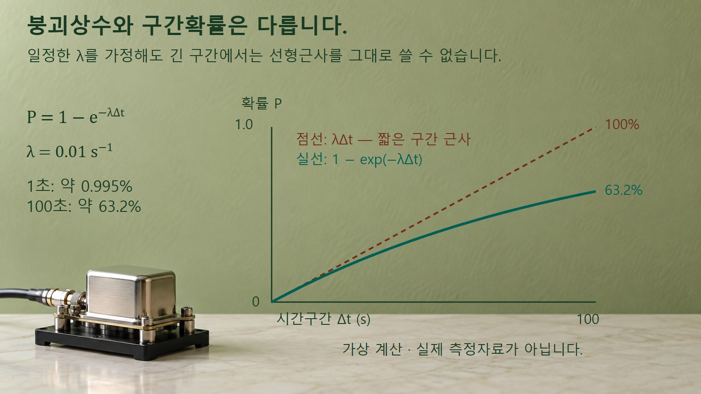
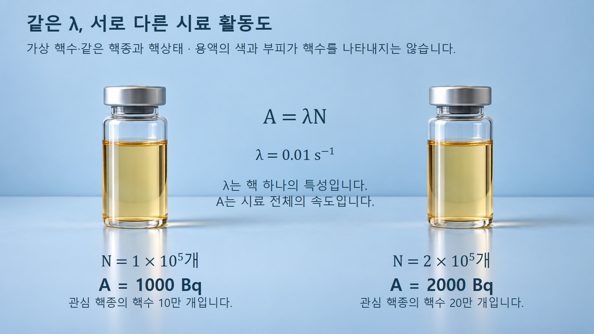

방사성붕괴와 시간 · 048
붕괴상수
핵 하나의 확률과 시료 전체의 붕괴율
붕괴상수는 시간의 역수 단위를 갖습니다. 짧은 구간의 근사, 긴 구간의 확률, 시료 활동도를 차례로 구분합니다.
일정한 것은 개별 핵의 짧은 구간 확률
붕괴상수 λ는 아직 붕괴하지 않은 핵 하나가 단위 시간에 붕괴하는 경향을 나타냅니다. 엄밀하게는 매우 짧은 시간구간에서의 조건부 붕괴확률을 그 시간 길이로 나눈 극한입니다. ICRP의 정의가 시간의 역수 단위를 사용하는 이유입니다. λ=0.01 s−1은 시간 단위가 초임을 뜻합니다.
이 설명에서는 같은 핵종·핵상태의 핵들이 독립적으로 붕괴하고, 관찰 중 λ가 일정하다고 가정합니다. λ가 일정하다는 말은 각 핵에 정해진 시한이 있다는 뜻이 아닙니다. 언제 붕괴할지는 확률적이며, 이미 오래 남아 있었다는 이유만으로 다음 짧은 순간의 붕괴확률이 커지지는 않는 모형입니다.
시료 전체에서 나오는 신호는 핵의 개수에도 좌우됩니다. 핵 하나의 특성을 나타내는 λ와 시료 전체의 붕괴율인 활동도 A를 구분하면, 물질의 양을 바꾸었을 때 무엇이 달라지는지 설명할 수 있습니다.
초의 역수와 퍼센트의 차이
확률은 0부터 1까지의 무차원 수이지만 λ에는 시간의 역수 단위가 있습니다. 따라서 0.01 s−1을 곧바로 1%라고 부르면 어느 길이의 시간구간인지 빠집니다. 짧은 구간 Δt에서 λΔt가 매우 작을 때만 붕괴확률 P를 λΔt로 근사합니다.
구간의 시작에 남아 있던 핵 하나를 기준으로, 일정한 λ에서 그 구간 동안 붕괴할 확률은 P=1−e−λΔt입니다. 이 식은 DOE 원자핵물리 교재의 생존분율 e−λt을 1에서 뺀 관계입니다. 시작 시점보다 이전에 이미 붕괴한 핵은 이 조건부 확률의 대상이 아닙니다.
시간구간이 길어지면 남아 있는 핵의 감소를 반영한 확률식이 필요합니다.

예시 1: 1초와 100초를 같은 방식으로 계산
가상 붕괴상수 λ=0.01 s−1인 핵을 보겠습니다. 1초 동안 붕괴할 확률은 1−e−0.01=0.009950…이므로 약 0.995%입니다. 짧은 구간 근사인 λΔt=0.01, 즉 1%와 가깝습니다. 두 값은 정확히 같지 않으며 실제 핵종의 평가값을 사용한 예시도 아닙니다.
같은 핵을 100초 동안 관찰하면 P=1−e−1=0.63212…이므로 약 63.2%입니다. 1%를 단순히 100번 더해 100%라고 할 수 없습니다. 먼저 붕괴한 핵이 다음 순간에 다시 붕괴하는 동일한 모핵으로 남아 있지 않기 때문입니다.
100초 뒤에도 원래 핵의 약 36.8%가 남는다는 것은 큰 집단의 기대 비율입니다. 핵 한 개에 대해 63.2%만큼 붕괴했다고 해석하지 않습니다. 한 핵은 이 모형에서 아직 남아 있거나, 이미 붕괴한 상태로 구분합니다.
예시 2: 핵수 두 배와 활동도 두 배
DOE 교재 NP-01의 31쪽 식 1-3은 활동도를 A=λN으로 연결합니다. 여기서 N은 관심 방사성 핵종의 남아 있는 핵수이며 중성자수를 뜻하는 다른 문맥의 N과 다릅니다. A도 질량수가 아니라 활동도 기호입니다.
가상으로 같은 순간에 첫째 시료의 N이 100,000개이고 λ=0.01 s−1이면 A=1,000 s−1, 즉 1,000 Bq입니다. 둘째 시료의 N이 200,000개이면 A=2,000 Bq입니다. NRC의 베크렐 정의에서 1 Bq는 초당 한 번의 핵변환에 해당합니다.
핵수가 두 배인 둘째 시료의 활동도도 두 배이지만 붕괴상수는 같습니다.

1,000 Bq라고 해서 매초 정확히 1,000개의 검출 펄스가 일정한 간격으로 도착하지는 않습니다. 붕괴에는 통계적 변동이 있으며 검출효율, 방출확률, 계수시간 등이 측정값에 영향을 줍니다. 또 이 A는 지정한 순간의 값이므로, 핵수가 빠르게 줄어드는 동안의 1초 평균과는 구분합니다.
단위 변환과 비교 조건
λ=0.01 s−1은 같은 물리량을 분 단위로 쓰면 0.6 min−1입니다. 단위 시간의 길이를 바꾸었기 때문에 수치가 60배가 된 것이며 핵의 성질이 달라진 것은 아닙니다. 지수 λΔt를 계산할 때 λ를 초의 역수로 썼으면 Δt도 초로 맞춥니다.
여러 핵종이 섞인 시료에서는 각 핵종의 λ와 N이 다릅니다. 총활동도는 각 성분의 λN을 더해서 계산하며 하나의 공통 λ를 임의로 곱하지 않습니다. 붕괴 생성물이 다시 방사성인 경우에는 어떤 핵종의 활동도를 셌는지도 지정합니다.
같은 핵종이라도 핵의 여기상태가 다르면 별도 상태로 구분해야 합니다. 이 글은 일정한 환경과 지정한 핵상태에서의 표준 붕괴모형을 설명하며, 모든 전자상태·환경 변화에 대한 절대 불변성을 주장하지 않습니다.
계측과 재고 관리에서의 사용
측정한 활동도와 신뢰할 수 있는 λ를 알면 N=A/λ로 관심 핵종의 핵수를 추정할 수 있습니다. 반대로 핵수와 λ를 알면 예상 활동도를 계산해 계측 범위나 붕괴 보정의 기초를 마련합니다. 이때 측정 활동도는 검출효율 등의 보정을 거친 양이어야 합니다.
예를 들어 두 시료의 활동도가 다르다는 사실만으로 더 큰 λ를 가진 핵종이라고 판단할 수는 없습니다. 먼저 핵종과 핵상태가 같은지, 비교 시각이 같은지, 핵수가 같은지를 확인해야 합니다. 앞의 두 시료는 λ가 같아도 핵수 차이만으로 활동도가 두 배가 됐습니다.
붕괴상수를 알면 시간에 따른 변화식을 세울 수 있지만 방사선의 에너지나 인체 영향까지 모두 정해지지는 않습니다. 다음 글에서는 같은 λ에서 남아 있는 핵수가 어떻게 지수적으로 감소하는지 이어서 설명합니다.
세 물리량을 구분하는 기준
붕괴상수, 구간확률, 활동도는 서로 연결되지만 대상과 단위가 다릅니다. 표의 조건을 함께 읽으면 단위가 있는 λ를 퍼센트로 오해하거나 활동도 증가를 핵 자체의 변화로 해석하는 실수를 줄일 수 있습니다.
| 물리량 | 대상·단위 | 예시와 조건 |
|---|---|---|
| 붕괴상수 λ | 남은 핵 하나 · s−1 | 0.01 s−1, 일정한 핵상태 |
| 구간확률 P | 지정한 시간구간 · 무차원 | 100초 동안 약 63.2% |
| 활동도 A | 시료의 순간 붕괴율 · Bq | 핵수 10만 개에서 1,000 Bq |